기존 실험(17씬 LOSO, 12씬 범용 head)은 씬당 1뷰가 한계였다. 이번에 뷰 다양성을 갖춘 대규모 렌더 데이터셋 2개(seed별 카메라 교란)를 받아 1,537뷰 전체에 풀 파이프라인을 돌리고, 거울검출 head 를 4가지 train/test 체제로 학습·평가했다.
| 항목 | 내용 |
|---|---|
| 데이터 | Archive/ds_v1_seed0 (13씬, 836뷰) + Archive/ds_v2_seed1 (13씬, 833뷰) |
| 뷰 구성 | 씬당 55~66뷰. v00 = 기준뷰(교란 0, 두 seed 동일 카메라), v01+ = 랜덤 교란(±0.3 m 이동, ±5° 회전) |
| seed 차이 | 카메라 교란의 난수 시드만 다름 (intrinsic/해상도/스키마 동일) |
| GT | 뷰마다 mirror mask + GT depth/disparity + GT 거울평면(meta 해석값 + depth 역투영, 교차검증됨) |
| 유효 처리량 | 12씬 × 2seed = 1,537뷰 (loft 제외, §2) — 전 단계 fail 0 |
파이프라인(뷰당): FS 추론(prior 추출) → RANSAC 평면 → inlier 시각화 → GT 평면 → AHCF RQ 분석 → 단일뷰 submodel → 범용 head 적용.
disp_gt.npy는 평균 29px로 자기모순 — GT 생성 카메라와 실제
렌더 카메라가 따로 동작. 배치에서 제외, 재렌더 필요.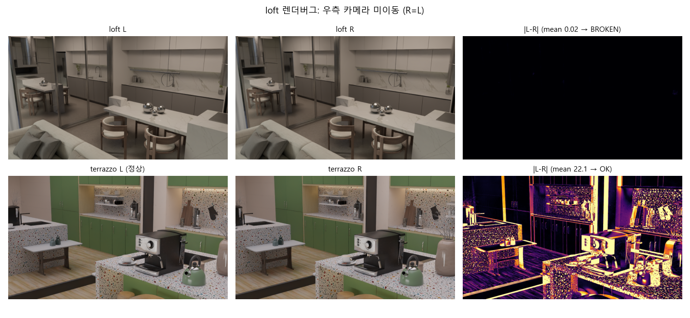
위: loft L/R/차이(거의 0) · 아래: 정상 terrazzo 비교.
그 외 품질: 빈/이상 마스크 0개(1,669뷰 전수 스캔). 구버전에서 문제였던 terrazzo/minigym(벽 뒤 거울)·bedroom(마스크 오류)은 이번 판에서 모두 정상.
뷰당 모델 로드(~8s)를 없애기 위해 FS 모델을 1회 로드해 전 뷰를 연속 추론하는 서버
(run_fs_server.py)와, fs/.done 마커를 폴링해 나머지 6단계를 처리하는
후처리 워커(run_views_batch.py --post_only)로 분리했다.
| 방식 | 뷰당 시간 | 1,537뷰 예상 |
|---|---|---|
| 기존(뷰마다 7개 subprocess) | ~35 s | ~15 h |
| 워커 4개 + GPU 락 | 실효 ~9 s | ~5.5 h |
| FS 상주 서버 + 후처리 6~12워커 | FS 2.7 s + 후처리 병렬 | ~2.5 h (실측) |
파이프라인 산출물 예시 (computer_room_v00):
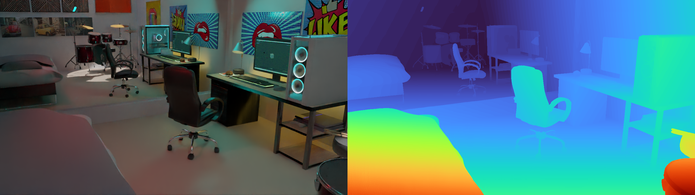
FS disparity (left 영상 + 시차맵).

거울 내부 점 RANSAC inlier(초록)/outlier(빨강) — 이 평면은 "반사면"이다.
| 뷰별 중앙값 | 비거울 | 거울 | 배율 |
|---|---|---|---|
| disp MAE (seed0 / seed1) | 0.21 / 0.22 px | 8.72 / 8.84 px | ~41× |
| depth MAE (seed0 / seed1) | 0.151 / 0.148 m | 2.57 / 2.61 m | ~17× |
| bad@1px (픽셀평균) | 8.0% | 96.6% | — |
두 seed가 사실상 동일한 수치 → 카메라 샘플링에 강건한 결론. 거울 영역 RANSAC 평면은 여전히 "반사면"(실제 거울면보다 ~2배 깊음, 예: computer_room 6.96 m vs GT 3.24 m).
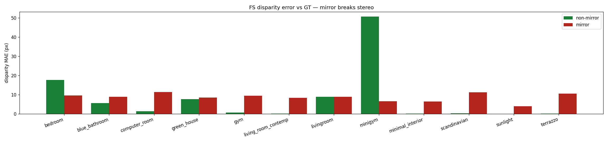
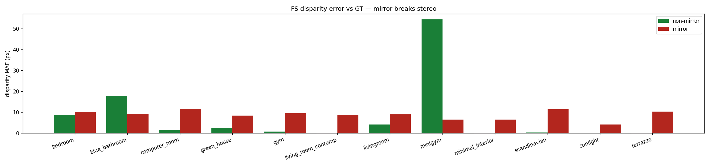
공통 셋업: 픽셀당 136-d prior feature(feat_left 128 + cost 통계 8), MLP head(136→64→1),
뷰당 4,000px 균형 샘플, 300 epoch. 모든 모델을 동일한 공통 test 뷰(464개)로 평가해
직접 비교 가능. 산출물: experiments/_splits/.
| 모델 | 학습 데이터 | 평가 대상 | AUC | IoU | F1 |
|---|---|---|---|---|---|
| single_scene (own) | 자기 씬 70% (~90뷰) | 자기 씬 30% | 0.985 | 0.715 | — |
| A. view_split | 12씬 70% (1,073뷰) | 12씬 30% (unseen 뷰) | 0.958 | 0.546 | 0.692 |
| ②. rep_view | 씬당 v00 1장 (12뷰) | 12씬 30% (v00 제외) | 0.955 | 0.540 | 0.686 |
| B. scene_split | 8씬 전체 (1,026뷰) | unseen 4씬 (511뷰) | 0.928 | 0.492 | 0.642 |
| ①. single_scene (cross) | 자기 씬 1개 | 타씬 11개 | 0.908 | 0.425 | — |
씬마다 7:3으로 나누고 12씬의 70%를 합쳐 단일 모델 1개 학습. test AUC 0.958 / IoU 0.546, 씬별 AUC 0.93~0.99.
좋은 예 — blue_bathroom_v51 (IoU 0.82 / AUC 0.99)
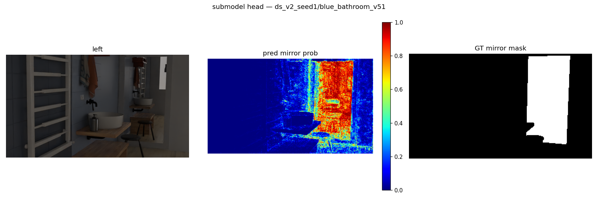
좋은 예 — minigym_v27 (IoU 0.81)
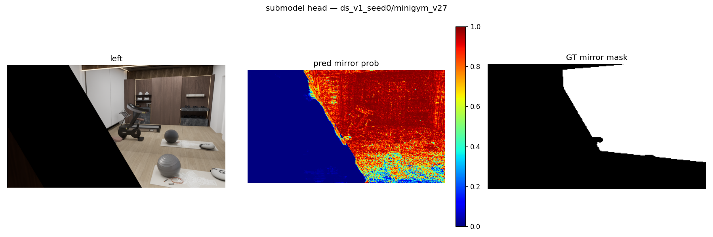
좋은 예 — computer_room_v55 (IoU 0.80)
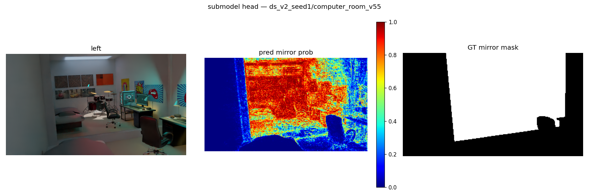
나쁜 예 — minimal_interior_v02 (IoU 0.06, AUC는 0.96)
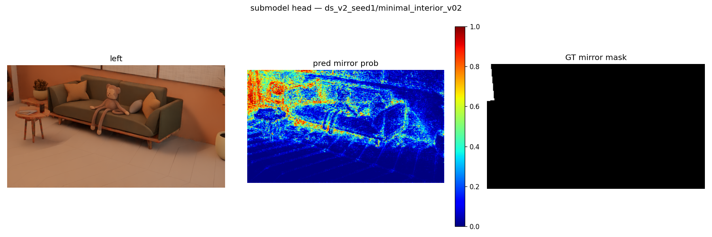
거울이 작고 확률이 0.5 임계 아래로 깔려 IoU가 무너짐 — 순위(검출)는 맞고 캘리브레이션이 문제인 전형 사례.
train 8씬 / test 4씬(blue_bathroom·gym·minimal_interior·terrazzo). test AUC 0.928 / IoU 0.492 (train 0.954/0.557 → unseen 갭 AUC −0.026 / IoU −0.065).
좋은 예 — blue_bathroom_v51 (unseen 씬인데 IoU 0.77)

좋은 예 — terrazzo_v29 (IoU 0.68)
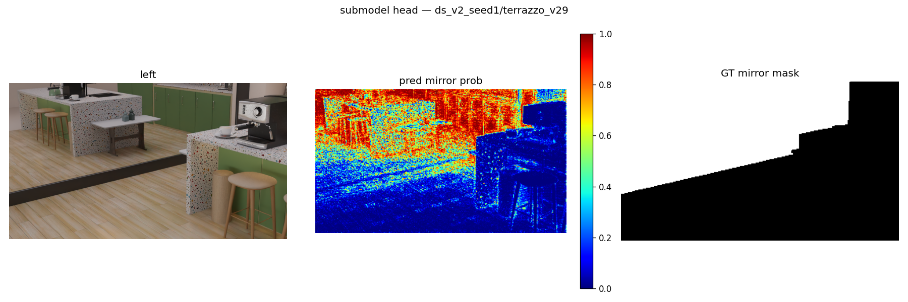
좋은 예 — gym_v60 (IoU 0.66)
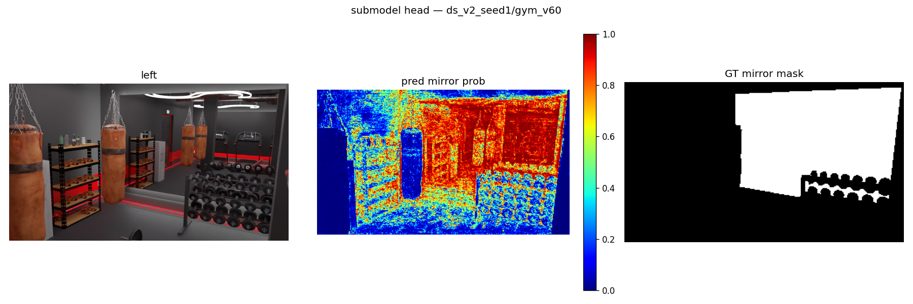
나쁜 예 — minimal_interior_v02 (IoU 0.04)
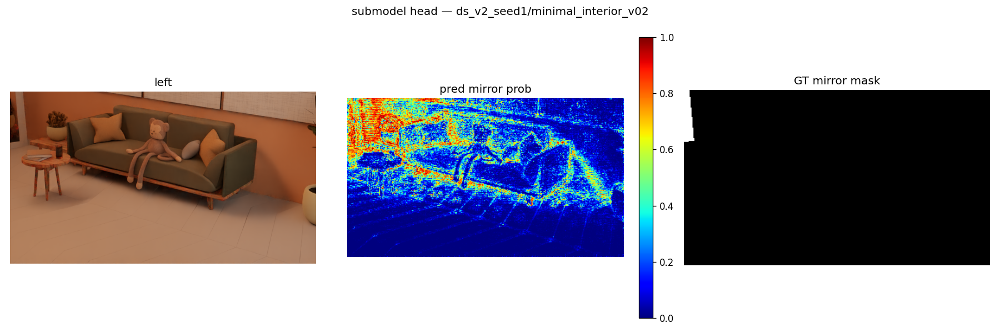
view_split과 같은 뷰가 여기서도 최악 — 작은 거울 + 밝은 미니멀 인테리어의 도메인 시프트가 원인.
각 씬의 train 뷰(70%)만으로 학습 → 공통 test 464뷰 평가 → 12×12 매트릭스 (행=모델, 열=평가 씬, 대각=자기 씬). own 평균 AUC 0.985 / IoU 0.715 vs cross 평균 0.908 / 0.425.
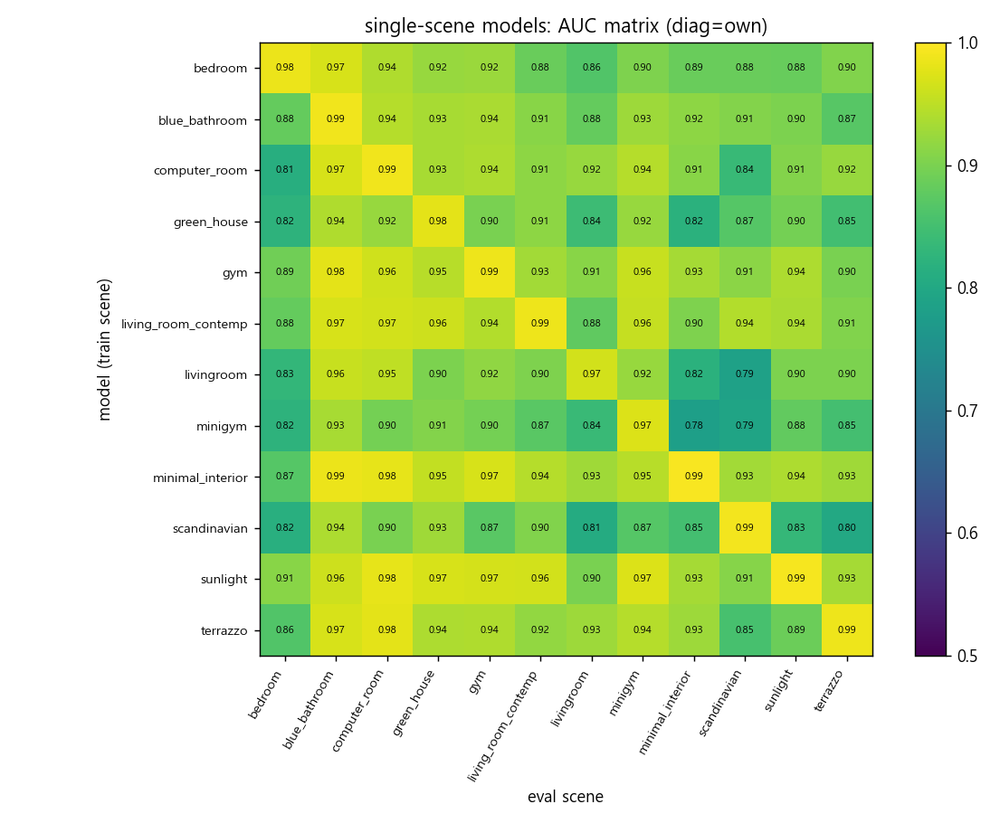

좋은 예 — terrazzo 모델 → terrazzo_v05 (own, IoU 0.93 = 전 실험 최고)
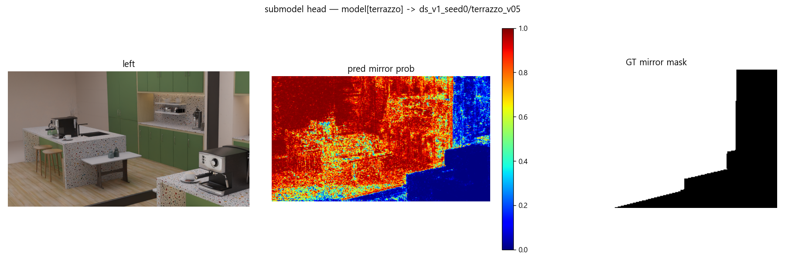
나쁜 예 — minimal_interior 모델 → blue_bathroom_v33 (cross, IoU 0.00)
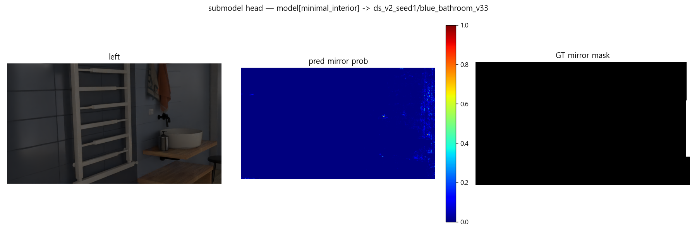
각 씬의 기준뷰 v00(seed0) 12장만, 뷰 전체 픽셀로 학습 → test 459뷰(v00 제외). AUC 0.955 / IoU 0.540 — 1,073뷰 학습(view_split)과 사실상 동급. train(본 12뷰) IoU 0.628로 test와 차이가 작아 암기가 아닌 일반화임.
좋은 예 — computer_room_v63 (IoU 0.80)
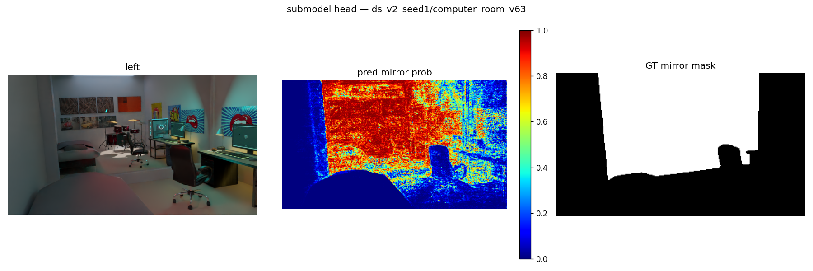
좋은 예 — blue_bathroom_v41 (IoU 0.80 / AUC 0.99)
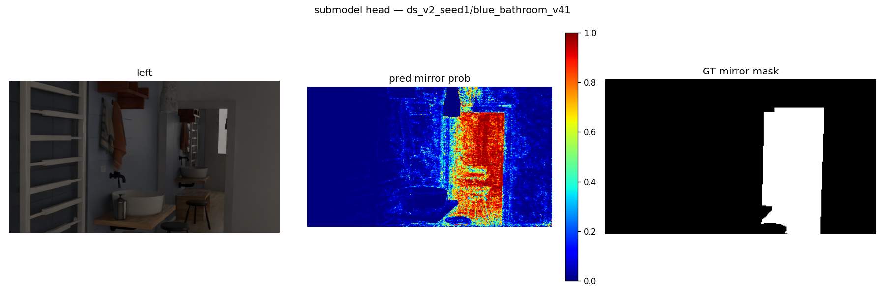
좋은 예 — minigym_v49 (IoU 0.78)
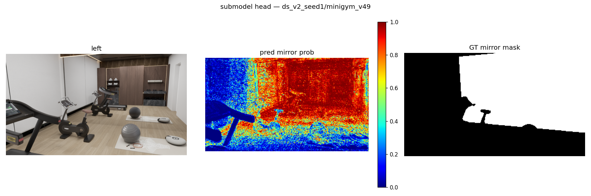
나쁜 예 — blue_bathroom_v03 (IoU 0.05, AUC 0.95)
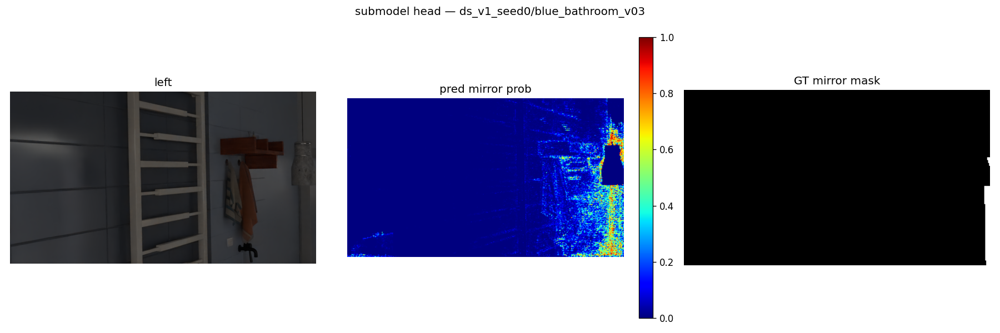
역시 작은-거울 + 낮은 확률 패턴.
§4에서 확인했듯 거울 안 점의 RANSAC 평면은 거울면이 아니라 반사면(~2배 깊음)이다.
진짜 거울평면 M 은 반사 대칭으로 푼다 (estimate_mirror_plane_sym.py):
P = reflect_M(P') 관계 →
대응쌍 (P', Q) 하나의 수직이등분면이 곧 평면 후보.검증: 단위테스트 6/6(반사 involution·이등분면 복원·노이즈 2cm+무대응 40% 합성 복원), 파일럿 4뷰 법선 0.4~4.7° / perp 0.01~0.40m.
| 전체 | 값 |
|---|---|
| 법선각 중앙값 | 2.3° (<5°: 76%, <10°: 92%) |
| perp 거리오차 중앙값 | 0.14 m (<0.2m: 57%, <0.5m: 74%) |
| 동시 충족(<10° & <0.5m) | 72% |
대표 비교 (computer_room_v00): RANSAC 반사면 perp 6.96 m → 정공법 3.23 m (GT 3.24 m, 법선 2.2°) — 거울 뒤 가상공간이 아니라 거울 유리면 자체를 잡는다.
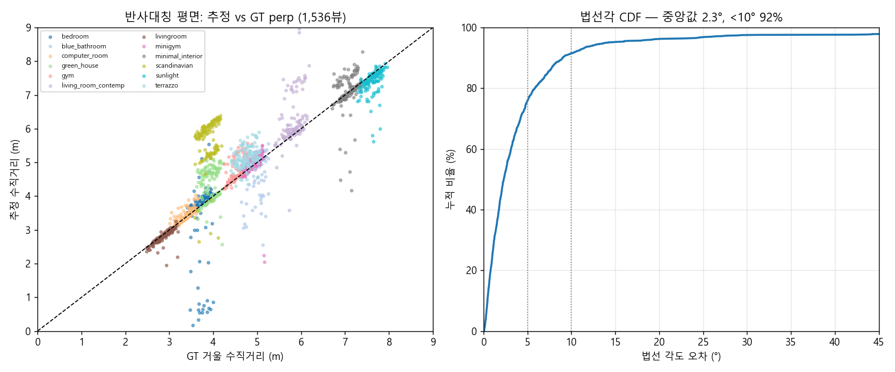
| 씬 | 각도 med | perp med | 성공률(<10°&<0.5m) |
|---|---|---|---|
| computer_room | 1.4° | 0.04m | 100% |
| livingroom | 1.0° | 0.05m | 98% |
| minigym | 2.2° | 0.08m | 96% |
| sunlight | 1.1° | 0.13m | 88% |
| gym | 2.3° | 0.07m | 82% |
| minimal_interior | 1.8° | 0.10m | 76% |
| living_room_contemp | 2.2° | 0.16m | 75% |
| blue_bathroom | 0.9° | 0.19m | 74% |
| bedroom | 2.9° | 0.14m | 71% |
| terrazzo | 4.2° | 0.40m | 64% |
| green_house | 5.1° | 0.61m | 40% |
| scandinavian | 7.0° | 2.09m | 2% |
성공 예 — 반사점(초록)이 방 점군(회색)과 정확히 포개지고 추정 평면(주황)=GT(파랑)
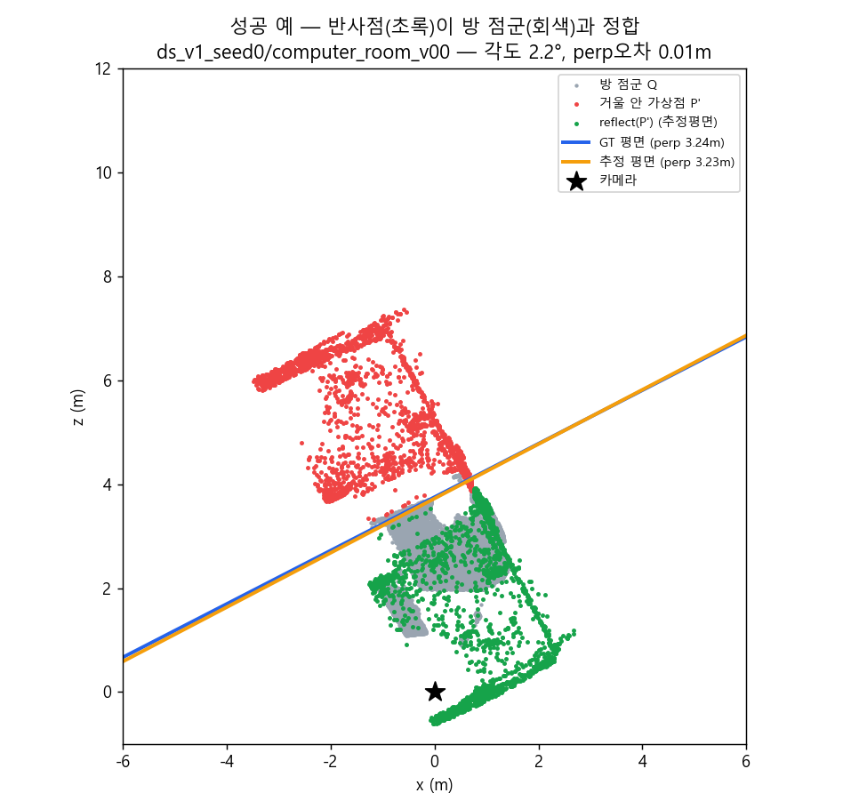
실패 예 — d-슬라이딩 퇴화 (scandinavian)
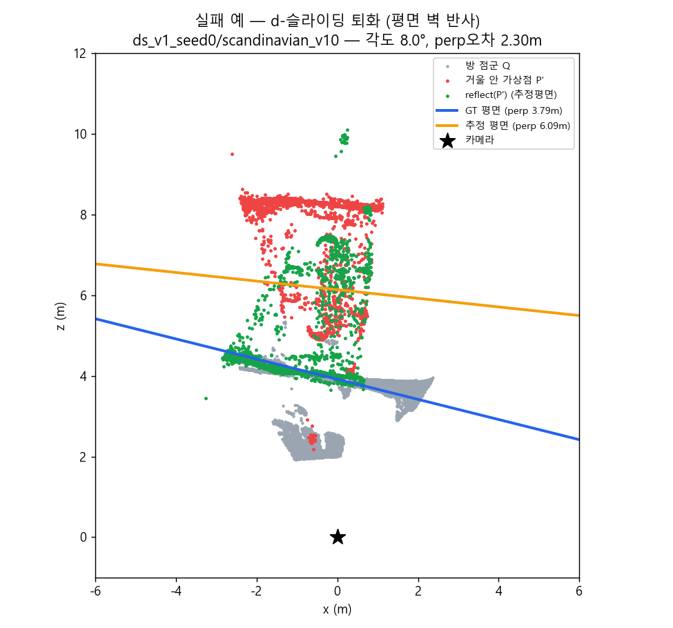
GT 평면으로 반사하면 점들이 카메라 뒤(관측되지 않은 공간)로 가서 NN 대응이 없음 → 스코어가 신호를 잃고, 보이는 먼 벽에 반사점을 끼워 맞추는 잘못된 평면을 선택.
--mask submodel 옵션 구현돼 있음).experiments/
ds_v1_seed0/, ds_v2_seed1/ 뷰별 전체 산출물 (770 + 767뷰) + _eval_gt_depth.{csv,json,png}
_splits/view_split/ model.pt, summary.json, applied/{train,test}/(panel·pred_mask·metrics)
_splits/scene_split/ 동일 구성
_splits/single_scene/ model_<scene>.pt ×12, matrix_{auc,iou}.csv, per_view_metrics.csv
_splits/rep_view/ model.pt, applied/(train 12 / test 120 샘플 panel)
<view>/mirror_geometry_sym/ 정공법 결과 (result.json: 평면 + GT대비 오차)
_eval_sym.csv / .json 정공법 전체 집계 (1,536뷰)
scripts/
run_fs_server.py FS 모델 상주 일괄 추론
run_views_batch.py prepare+파이프라인 배치 (--post_only 폴링 워커)
train_eval_splits.py A/B split 실험
train_eval_extra.py ①single_scene ②rep_view
apply_split_model.py split 모델 → panel/pred_mask/metrics 적용
estimate_mirror_plane_sym.py 정공법(반사대칭) 평면 추정 (+test_*.py 단위테스트)
run_sym_batch.py 정공법 샤드 배치 + --aggregate 집계
build_seeds_report_figs.py 본 보고서 figure 생성기 (+build_sym_report_figs.py)
report/figures_seeds/ 본 보고서 이미지 24장